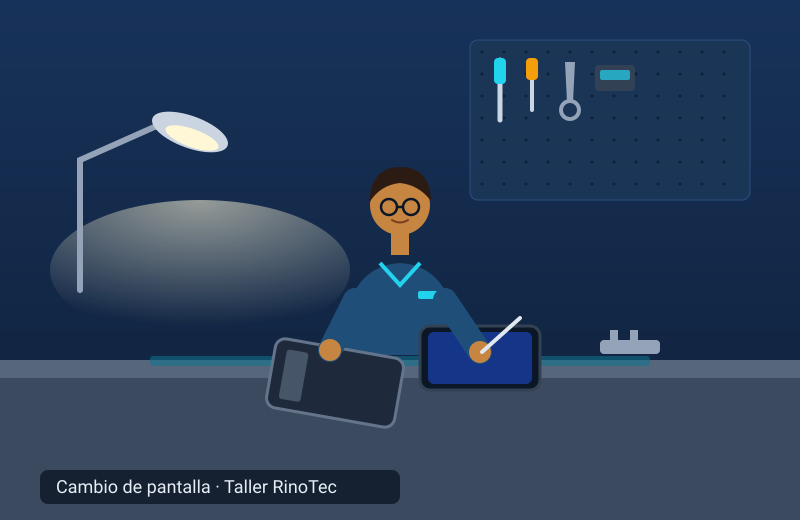
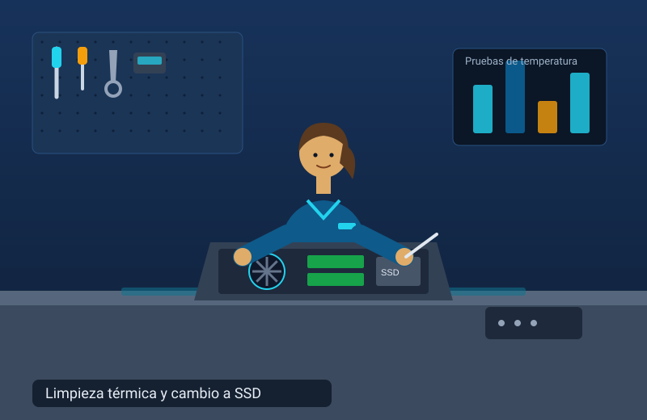
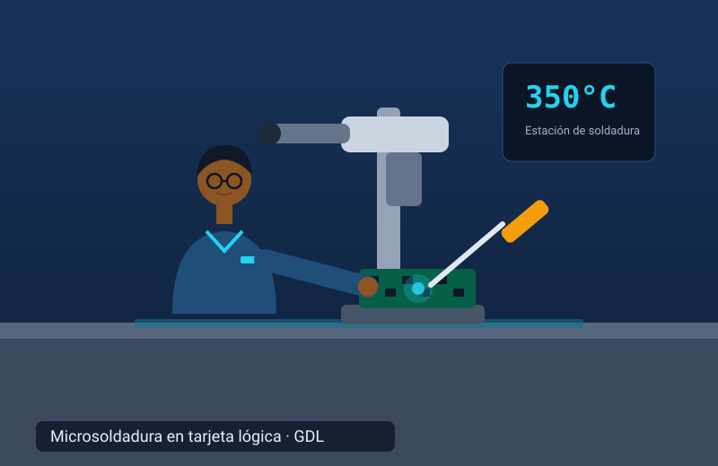
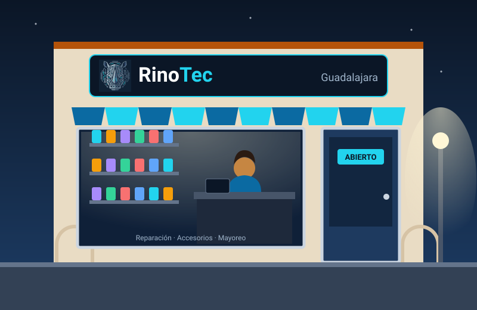
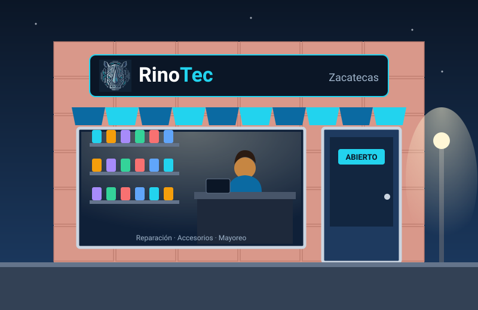
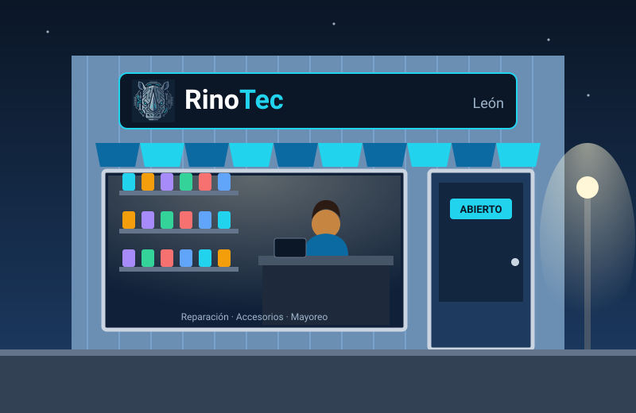
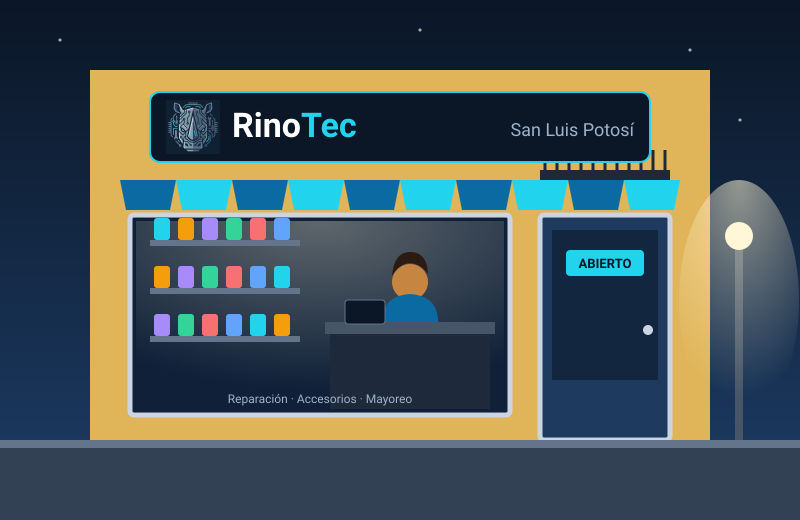
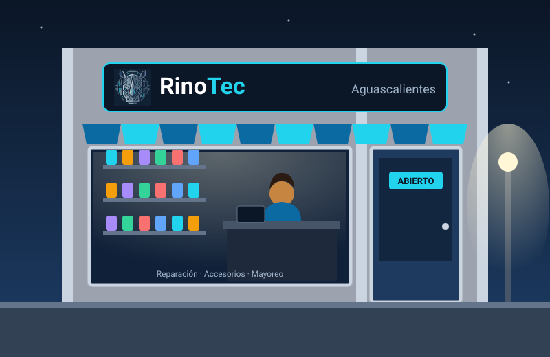

📱
Celulares
Cambio de pantalla y batería, centro de carga, bocinas y limpieza por humedad. Microsoldadura en tarjeta lógica en nuestro taller de Guadalajara.
Reparación · Mantenimiento · Accesorios
Reparamos celulares y computadoras con técnicos especializados, damos mantenimiento a escuelas y empresas, y surtimos accesorios al mayoreo y al menudeo en 5 ciudades.
Diagnóstico claro y presupuesto antes de reparar. Siempre.
Cambio de pantalla y batería, centro de carga, bocinas y limpieza por humedad. Microsoldadura en tarjeta lógica en nuestro taller de Guadalajara.
Actualización a SSD y RAM, cambio de ventiladores, teclados, bisagras y eliminadores, limpieza térmica, respaldo y reinstalación de sistema.
Contratos de mantenimiento preventivo y correctivo para tus equipos, con seguimiento de cada orden y un solo punto de contacto.
Fundas, micas de cristal templado, cargadores, cables, audífonos Bluetooth, baterías externas y memorias para las marcas más usadas.
Técnicos especializados en electrónica, con herramienta profesional y pruebas antes de entregarte tu equipo.



Surte tu negocio con precio de mayoreo desde 10 piezas del mismo producto. Surtimos desde la sucursal que tenga existencia y hacemos cambio físico por defecto de fábrica.
Mantén funcionando los equipos de tu equipo de trabajo o de tus alumnos con un contrato de mantenimiento.
En cualquiera de nuestras sucursales registramos tu equipo y te damos un folio de orden de servicio.
Un técnico revisa tu equipo y te confirmamos el costo antes de reparar. Sin sorpresas.
Pregúntale a Rino, nuestro asistente con IA, por tu folio a cualquier hora, aunque tu equipo esté en otra sucursal.
Nunca te pediremos por chat ni por teléfono la contraseña o el PIN de tu equipo, y nuestro asistente tampoco los comparte.
Reparación, accesorios y mayoreo en las 5 sucursales. Tu garantía es válida en cualquiera de ellas.





Depende de la falla y de la refacción. Al recibir tu equipo te damos una fecha promesa en tu orden de servicio y puedes consultar el avance con Rino usando tu folio.
Sí. Buscamos tu orden por tu nombre, el modelo y el número de serie o IMEI del equipo. La garantía es de 90 días en mano de obra.
Sí, la garantía aplica en cualquiera de nuestras 5 sucursales.
Desde 10 piezas del mismo producto. Pregúntale a Rino por precios y disponibilidad.
Nunca. RinoTec no pide ni comparte contraseñas, PIN o patrones por chat, teléfono o correo.
No cubre golpes, humedad ni manipulación por terceros posteriores a la entrega, ni daños por variaciones de voltaje.
Estado de tu equipo, precios, existencias y garantías, en segundos.